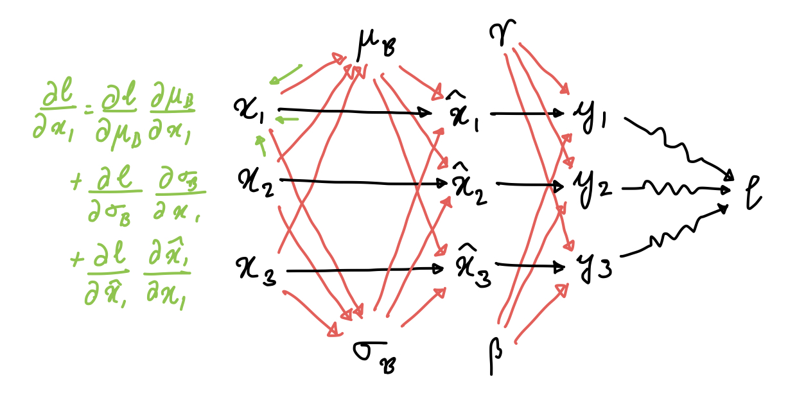
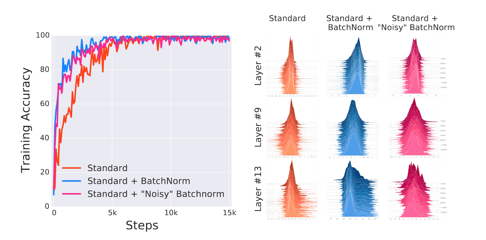
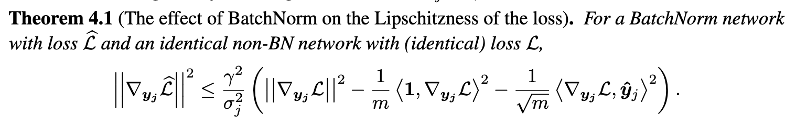

Batch Normalization
Posted on Thu 16 February 2023 in Mathematics
$$ \require{physics} \newcommand{B}{\mathcal{B}}$$
Batch Normalization was proposed by Ioffe and Szegedy in 2015, and it spawned several normalization techniques that are used in SOTA models today (layer norm, weight norm, etc). Batch normalization normalizes the output of each layer based on the mean and variance of the examples in the current batch. Formally, if $\B = {x_1, \ldots, x_m}$ is our batch, then batch norm does the following transformation:
$$\begin{align} \mu_{\B} &= \frac{1}{m} \sum_i x_i \\ \sigma_{\B}^2 &= \left( \frac{1}{m} \sum_i x_i^2 \right) - \mu_{\B}^2 \\ \hat{x}_i &= \frac{x_i - \mu_{\B}}{\sqrt{\sigma^2_{\B} + \epsilon}} \\ y_i &= \gamma \hat{x}_i + \beta \end{align}$$
Why?
When networks are trained, the partial derivative of a parameter obtained during backprop gives us the gradient assuming all other parameters remain constant. This is not true, as the parameters simultaneously change. This causes the input distribution to a layer in a deep neural network to change significantly from update to update, and this is called Internal Covariate Shift.
Mathematically, if we have a simple linear model $y = w_l w_{l-1} \ldots w_1 x$, and we update each parameter via the partial derivative of that parameter, then we get $\hat{y} = (w_l - \epsilon g_l) \ldots (w_1 - \epsilon g_1) x$. Note how even the second order terms ($\epsilon^2 (\prod_{i=l}^3 w_i)g_2 g_1$) may become very large, making learning harder.
Batch norm aims to reduce internal covariate shift by normalizing the layers. This centers them and reduces variance due to noisy parameter updates, while not taking any information away (the model is still free to learn whatever mean and variance it chooses to learn by updating $\gamma$ and $\beta$.)
Backprop
Before manually doing the backprop, a computation graph really helps here.

This is a small computation graph that uses just three examples, but it's sufficient to show which variables are dependent on each other, and how. This allows us to go ahead and obtain all the partial derivatives via chain rule:
$$\begin{align} \pdv{l}{\gamma} &= \sum_i \pdv{l}{y_i} \hat{x}_i \\ \pdv{l}{\beta} &= \sum_i \pdv{l}{y_i} \\ \pdv{l}{\hat{x}_i} &= \pdv{l}{y_i} \gamma \\ \end{align}$$
The next three are a bit tricky. To check the derivation, just follow the edges of the computation graph. $$\begin{align} \pdv{l}{\mu_{\B}} &= \sum_i \pdv{l}{x_i} \pdv{x_i}{\mu_{\B}} \\ &= \sum_i \pdv{l}{x_i} \cdot \frac{-1}{\sqrt{\sigma^2_{\B} + \epsilon}} \\ \pdv{l}{\sigma^2_{\B}} &= \sum_i \pdv{l}{x_i} \pdv{x_i}{\sigma^2_{\B}} \\ &= \sum_i \pdv{l}{x_i} \cdot \frac{-1}{2} \cdot \frac{(x_i - \mu_{\B})}{\left(\sigma^2_{\B} + \epsilon\right)^{3/2}} \\ \pdv{l}{x_i} &= \pdv{l}{\hat{x}_i}\pdv{\hat{x}_i}{x_i} + \pdv{l}{\sigma^2_{\B}}\pdv{\sigma^2_{\B}}{x_i} + \pdv{l}{\mu_{\B}}\pdv{\mu_{\B}}{x_i} \\ &= \pdv{l}{\hat{x}_i}\frac{1}{\sqrt{\sigma_{\B}^2 + \epsilon}} + \pdv{l}{\sigma^2_{\B}}\frac{2(x_i-\mu_{\B})}{m} + \pdv{l}{\mu_{\B}}\frac{1}{m} \end{align}$$
This is what the paper mentions as well. With a few modifications, the derivatives
here can be vectorized: $\pdv{l}{\alpha}$ would become $\grad_\alpha l$, and
the other derivatives would become jacobians. The division would become pointwise,
and so would the multiplication at some places. EDIT: I realized that
it's easier to do this in a component-wise fashion: $x_i$ would become $x_i^{(j)}$,
the $j$th component of the $i$th example in the batch. This is also how
Wikipedia does it.
Deeper Intuition
This very nice paper by Kohler et al shows that Batch Normalization (and friends) may be thought of as a reparameterization of the weight space. In matrix notation, The normalization operation amounts to computing the following:
$$\text{BN}(x^TW) = \gamma \frac{x^TW - \text{E}(x^TW)}{\text{Var}(x^TW)^{1/2}} + \beta$$
Assuming $x$ is zero-mean, we can rewrite the variance as
$$\begin{align} \text{Var}(x^TW) &= \text{E}\left((x^TW)^2\right) \\ &= \text{E}(W^Txx^TW) \\ &= W^T \text{E}(xx^T) W \\ &= W^T S W \end{align}$$
where S is the covariance matrix of $x$. If we rewrite the weights as $\hat{W} = \gamma \frac{W}{(W^T S W)^{1/2}}$, then the output of the layer after batch normalization is simply $x^T \hat{W}$. Thus, we've reparameterized the weight matrix, making it account only for the direction in the covariance space $S$ and letting $\gamma$ determine the magnitude. Weight Normalization does the same thing, but $S$ is replaced by $I$.
Does it work?
According to newer work, yes but no. Santurkar et al show that Internal Covariate Shift is not as detrimental to learning as thought of, by synthetically injecting noise after BatchNorm layers. The result was that the network doesn't do as poorly as expected, but it still outperforms the standard network.

The explanation that they gave was that Batch norm assists the optimizer by making the loss landscape smoother. Formally, the magnitude of the gradient of the loss $||\grad_{y_j}\mathcal{L}||$ captures the smoothness of the loss. Batch norm reduces the bound on the gradient relative to an un-batch normed network significantly.

Batch norm also imposes some second-order constraints on the hessian, which can intuitively be summarized as saying that the step we take in the direction of the gradient is more likely to lead us to a minima for a batch-normalized network compared to an unnormalized network.
I'm surprised that people actually read these ^_^ I haven't posted much due to minors and assignments, but I'll see if I can post more ML stuff on here if time permits.